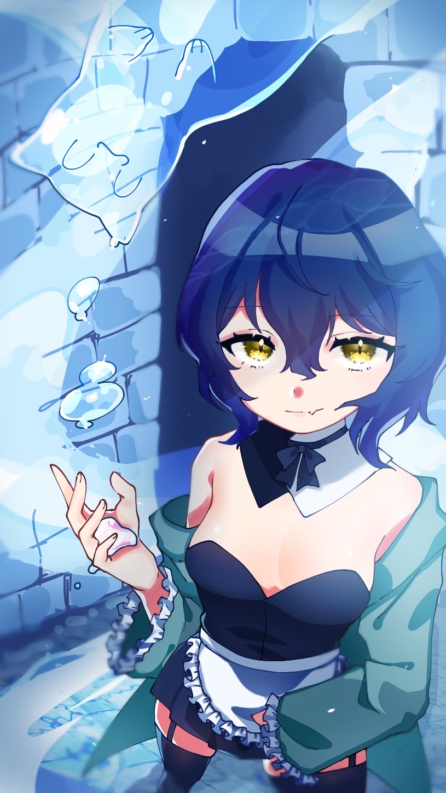

アリス
プロフィール

| 名前 | アリス |
|---|---|
| 年齢 | 20 |
| 誕生日 | 11/13 |
| 身長 | 166cm |
| 体重 | 54kg |
| 血液型 | O |
| 利き手 | 右 |
| スリーサイズ | 98/57/83 |
| 星座 | さそり座 |
| 出身地 | 福島県 |
| 趣味 | 歌うこと、お絵描き、プログラミング、アニメ |
| 好きなもの | つきみちゃん |
| CV | アリス |
本キャラクターのデザインはオリジナルのモノです。無断使用禁止。
本画像の著作権はいざなに帰属します。無断使用禁止。
本画像の著作権はいざなに帰属します。無断使用禁止。